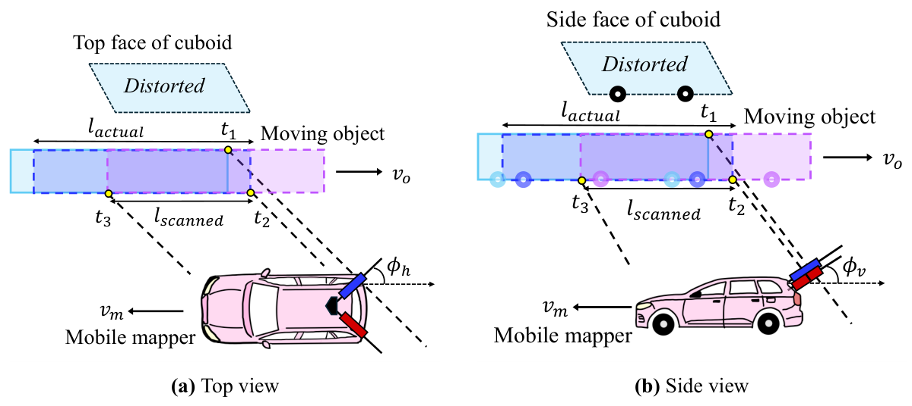
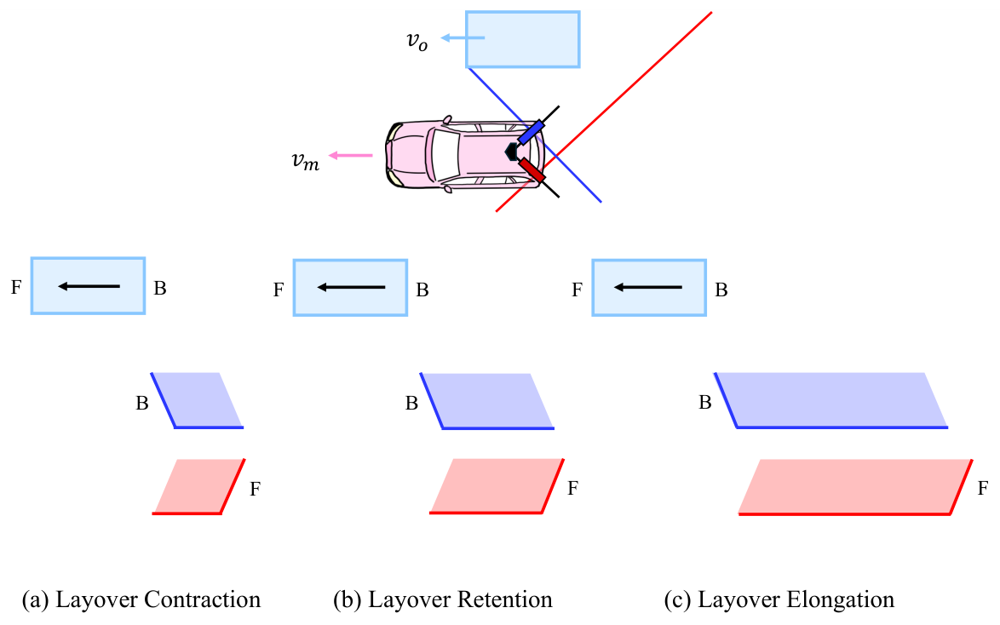
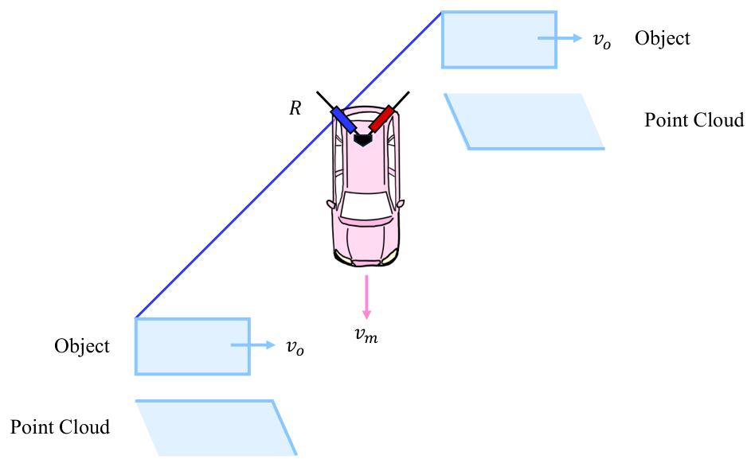
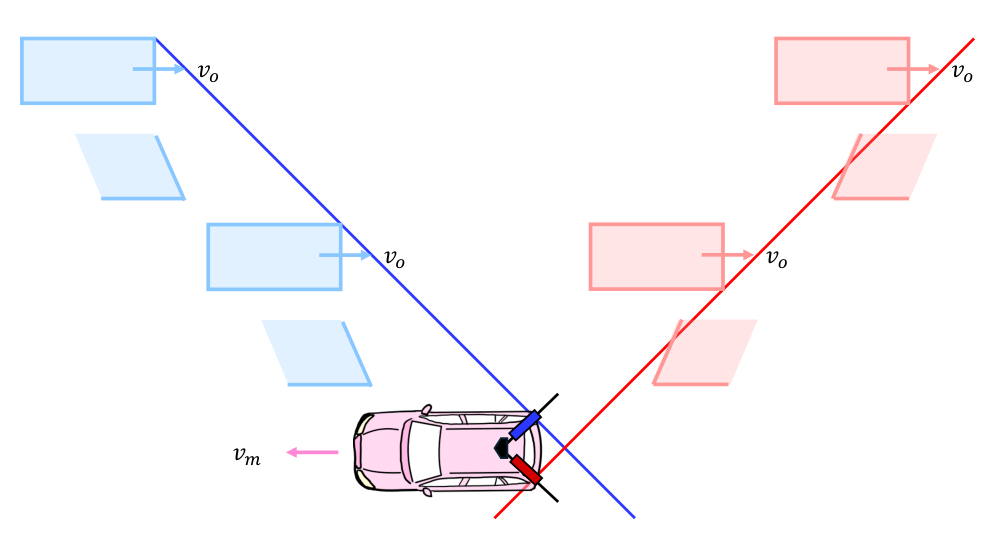
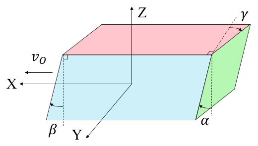
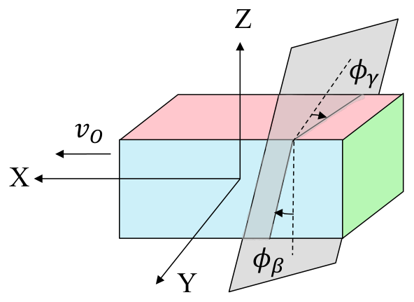
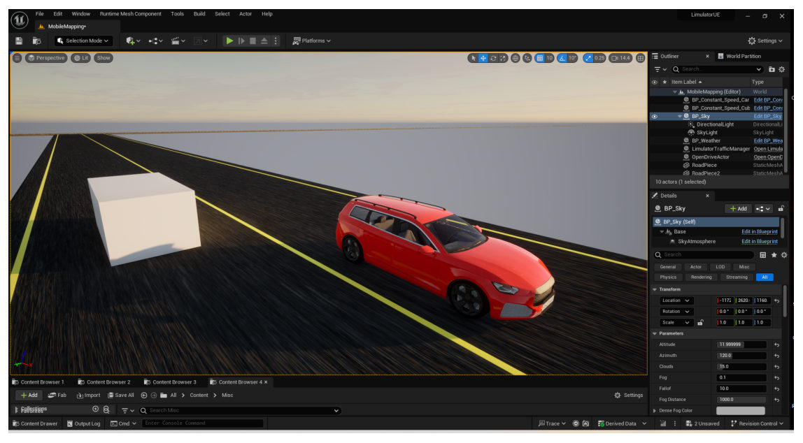

Modeling Point Cloud Distortions in Mobile Laser Scanning for Surveying
Department of Civil Engineering, Indian Institute of Technology Kanpur
Journal of Surveying Engineering (ASCE), Vol. 152, No. 3, 04026006, 2026

Overview
A moving object never looks the way it is
A mobile laser scanner builds its point cloud one profile at a time. If the object being scanned is moving too, every profile catches it in a different place, and the cloud shows a shape that never existed.
Earlier studies noticed these distortions, but no one had described what kinds there are or written down the equations that govern them. This work does both. It classifies motion-induced distortions in mobile laser scanning (MLS) into two families, derives closed-form equations for each, and checks the equations against simulated LiDAR data.
Shorter or longer
Head-on traffic shrinks; traffic you overtake stretches. The ratio depends only on two speeds.
Back where the front is
When the object outruns the scan line, its back is recorded first, and the cloud is flipped end to end.
Boxes become skewed
A tilted scan plane catches each face at a slant, so a cuboid turns into a parallelepiped with tilts γ, β and α.
Abstract
Mobile Laser Scanning (MLS) LiDAR data are susceptible to distortions when the scanned objects are in motion. Although some prior studies have acknowledged the existence of such distortions, there is yet no fundamental work describing their nature and types, and modeling them in the form of closed-form equations. This research, for the first time, systematically studies these distortions in detail and derives the fundamental equations governing them. The distortions are classified into two primary types: length distortion and parallelepiped distortion. Length distortion causes the point clouds of moving objects to appear shorter or longer than their actual sizes, depending on the relative direction of motion between the mobile mapper and the object. Another notable length distortion observed is layover, where the rear of a moving object appears in place of its front in the scanned point cloud. Parallelepiped distortion transforms the point cloud of a cuboid-shaped object into a skewed parallelepiped. The skew of the faces depends on the relative orientation between the scanning plane and the movement directions of the mobile mapper and the object. The derived equations have been verified through simulation. This deeper understanding of motion-induced point cloud distortions will contribute to more accurate analysis and interpretation of MLS data in dynamic environments.
Learn
The idea in five steps
No background in LiDAR is needed for this part. If you know that distance equals speed times time, you can follow it.
-
The scanner draws one line at a time
Survey-grade mobile mappers often carry 2D profile scanners. Each one spins a laser inside a single plane and records one thin slice of the world per rotation. The vehicle's own motion pushes that plane forward, and the slices stack up into a 3D point cloud.
The plane is usually tilted: turned by a horizontal angle φh away from straight sideways, and tipped by a vertical angle φv. Two scanners, left and right, cover both sides of the road.
-
For a still world, this works perfectly
GNSS and an inertial unit record where the scanner was at every instant. Each point is placed using the scanner's pose at the moment it was measured. A parked car comes out at its true size, because it was in the same place the whole time.
-
A moving object is in a different place for every slice
The scanner captures the front of a moving car at one moment and its back a fraction of a second later. In between, the car moved. The system still places each point correctly for that instant, but stitched together, the points describe a car that never existed.
Ego-motion compensation cannot fix this. It removes the scanner's motion, not the object's.
-
It is a race between the scan line and the object
Picture where the scan plane cuts the object's path. As the mapper drives, that cut point slides along the path at a speed vl, which depends on the mapper's speed and the angles. The object moves along the same path at vo. Compare the two:
- Head-on (they move toward each other): the scan finishes the object quickly. Contraction.
- The scan line overtakes the object (vl > vo): the scan has to chase it. Elongation.
- Same speed (vl = vo): the line rides along with one slice of the object forever. Over-elongation, a streak.
- The object outruns the line (0 < vl < vo): the back is captured first. Layover: front and back swap.
-
A slanted plane makes the box lean
Because the scan plane is tilted, the near and far edges of a face are not captured at the same instant either. The object moves in between, so every face shears into a parallelogram. The top face tilts by γ, the side faces by β, and together they push the front and back faces off square by α. The box becomes a parallelepiped.

Two results that surprise people


Both follow from the equations: distortion depends only on the speeds, the direction of travel and the scanner angles. The simulator below lets you check this for yourself.
Common questions
Isn't this handled by motion compensation?
Standard compensation corrects for the scanner's own motion using GNSS and IMU data. That fixes static scenery but does nothing for an object with its own velocity. Correcting moving objects requires knowing, or estimating, how they moved. These equations describe exactly what that motion does to the cloud.
Is this the same as the rolling-shutter effect?
It is closely related. Both happen because a scene is captured over time rather than all at once. Rolling shutter usually refers to the sensor's own motion; here the subject is the motion of the objects being scanned, relative to a moving scanner.
Why does it matter in practice?
Vehicle dimensions extracted from MLS data can be wrong by metres, layover can put the front of a vehicle where its back should be, and skewed boxes confuse object detectors and change-detection pipelines. Knowing the distortion lets you predict it, flag it, or remove it. It also opens the reverse problem: estimating an object's speed from how distorted it looks.
What does the model assume?
Constant, straight-line velocities for both the mapper and the object; fixed scanner angles; flat ground; a single-channel 2D rotating scanner fast enough that each rotation is effectively instantaneous; and a rigid box-shaped object that does not rotate. Extending it to acceleration, turning objects and multi-beam 3D LiDAR is future work.
Interactive
Distortion explorer
Set the speeds and directions, then press Play scan. The drawing is a top-view simulation of a 4 m × 2 m box scanned by a tilted profile scanner. It is computed from the geometry alone, without the equations, so you can watch the distortion emerge and compare it with what the equations predict.
The scan plane misses the top face at this angle.
The readouts and the “Simulation” line below still describe the top-view (2D) model.
Readouts use the paper's equations. Negative lengths mean layover. The signs of γ, β and α follow the paper's equations. The presets use the same speed ratios as the thesis test cases (km/h here, cm/s in the thesis), so the readouts match Tables 6.1 and 6.2.
Method
The equations
Take the x-axis along the mapper's direction of travel, y to its left and z up. The object moves at speed vo at angle θ to the mapper, which moves at vm. Both move in straight lines at constant speed.
| Symbol | Meaning |
|---|---|
| vm, vo | Speed of the mobile mapper and of the object |
| θ | Angle between their directions of motion (0° same, 180° opposite) |
| φh, φv | Horizontal and vertical orientation angles of the scan plane |
| vl | Speed at which the scan plane sweeps along the object's path |
| la, ls | Actual length of the object and its length in the point cloud |
| γ, β, α | Tilt of the top face, tilt of the side faces, deviation of the front/back faces |
| τ | Included angle between front and side faces of the undistorted object (90° for a box) |
1. How fast the scan plane sweeps the object's path
The first step turns the mapper's speed into the speed of the scan plane along the object's path:
with − for the right scanner and + for the left. Read with its sign, vl is positive when the sweep runs in the object's direction and negative when it runs against it. Its magnitude is what enters the equations below.
2. Length distortion
If the object moves against the sweep, the scan crosses it from front to back while the object closes the gap, so the cloud contracts:
If they move the same way, the scan has to catch up:
A negative ratio means the scan ran the wrong way through the object: layover. The cases follow directly.
| Motion | Condition | Scan runs | Result | Point density |
|---|---|---|---|---|
| Opposite | any speeds | front → back | Contraction, ls < la | higher |
| Same | vl > vo | back → front | Elongation, ls > la | lower |
| Same | vl = vo | stays on one slice | Over-elongation, ls = vo ts | lower |
| Same | vo/2 < vl < vo | front → back | Layover elongation | lower |
| Same | vl = vo/2 | front → back | Layover retention, |ls| = la | unchanged |
| Same | 0 < vl < vo/2 | front → back | Layover contraction | higher |
In over-elongation the cloud says nothing about the object's real size. Its length depends only on how long the scan lasted (ts), so such points should be treated as outliers.
3. Parallelepiped distortion


Each tilt is the plane's intersection angle with that face, scaled by how fast the object moves relative to the sweep, vo,l (vo − vl in the same direction, vo + vl in opposite directions):
Φβ comes from crossing the scan plane's normal with the side face's normal, and is then adjusted to φβ by scanner side and θ (for the left scanner, φh is replaced by −φh). The two tilts together set the front/back deviation:
with + for 0 ≤ θ < 180° − φh and − otherwise. When the sweep keeps pace with the object (vl = vo, same direction), the tilts become purely geometric: γ = φγ and β = φβ.
The paper and thesis give the full derivations, the piecewise rules for each scanner, and summary tables for θ = 0°, 90° and 180°.
Results
Validation in simulation
The equations were tested on synthetic LiDAR data from the SimDaaS simulation engine, built on Unreal Engine. The virtual mapper copies the StreetMapper-V system, which carries two RIEGL VQ-450 2D rotating scanners. A 4 m × 2 m × 1.5 m box drove past it in 17 test cases: five directions (0°, 40°, 90°, 130°, 180°) and a range of speeds. Some cases repeated a speed ratio with different absolute speeds, to show that only the ratio matters.

| Simulation parameter | Value |
|---|---|
| Pulse repetition frequency | 550 kHz |
| Channels | 1 |
| Scanning frequency | 60 Hz |
| Wavelength | 1.4 µm |
| Horizontal field of view | 360° |
| Scan plane angles φh, φv | 45°, 30° |
| Object (l × w × h) | 4 × 2 × 1.5 m |
Lengths and angles were measured on the simulated clouds in CloudCompare and compared with the predictions. Across all cases and both scanners, the root-mean-square errors were:
The remaining error comes from the data rather than the model. Points are sampled discretely, so corners and edges are never captured exactly, and the corner angles had to be measured by hand.
Show all length test cases (thesis Table 6.1)
| Case | θ | vo (cm/s) | vm (cm/s) | Left obs. | Left pred. | Right obs. | Right pred. |
|---|---|---|---|---|---|---|---|
| A0 | 0° | 0 | 400 | 4.00 | 4.00 | 4.00 | 4.00 |
| A1 | 0° | 200 | 400 | 8.08 | 8.00 | 8.08 | 8.00 |
| A2 | 0° | 400 | 400 | – | – | – | – |
| A3 | 0° | 1000 | 400 | −2.67 | −2.67 | −2.66 | −2.67 |
| B1 | 180° | 200 | 400 | 2.66 | 2.67 | 2.65 | 2.67 |
| B2 | 180° | 400 | 400 | 1.99 | 2.00 | 1.98 | 2.00 |
| B3 | 180° | 400 | 800 | 2.66 | 2.67 | 2.64 | 2.67 |
| C1 | 90° | 200 | 400 | 2.65 | 2.67 | 7.99 | 8.00 |
| C2 | 90° | 400 | 400 | 1.99 | 2.00 | – | – |
| C3 | 90° | 600 | 400 | 1.59 | 1.60 | −7.97 | −8.00 |
| D1 | 40° | 200 | 400 | 4.26 | 4.26 | 13.57 | 13.53 |
| D2 | 40° | 400 | 400 | 4.24 | 4.56 | −9.75 | −9.78 |
| D3 | 40° | 400 | 800 | 4.19 | 4.26 | 13.44 | 13.53 |
| D4 | 40° | 800 | 1000 | 4.43 | 4.44 | −31.34 | −31.48 |
| E1 | 130° | 200 | 800 | 2.37 | 2.96 | 4.20 | 4.13 |
| E2 | 130° | 400 | 400 | 1.96 | 1.66 | 3.93 | 4.56 |
| E3 | 130° | 800 | 400 | 1.02 | 1.05 | 5.27 | 5.31 |
Scanned lengths in metres; the true length is 4 m. Negative values are layover. “–” marks over-elongation, where the length grows with scan time. The angle results (Table 6.2) are in the thesis.
Limitations
The model assumes constant straight-line velocities, flat ground, a single-channel 2D scanner and a rigid object that does not rotate. Validation used simulation only, because public MLS datasets lack ground-truth velocities for moving objects. Natural next steps are non-uniform motion, multi-beam 3D LiDAR, estimating object velocity from the distortion itself, and correcting distorted clouds with these equations.
Resources
Read and teach
- Journal articleJournal of Surveying Engineering (ASCE), 2026 · Editor's ChoiceDOI
- ThesisFull derivations, literature review, appendix tables for every case · IIT Kanpur, 2025figshare
- Defense slidesA visual walk-through of the problem and the derivationsZenodo
- Poster, GeodCon-26National Symposium on Geodesy, INSA New Delhi, 2026figshare
- Poster, Geospatial Technologies and Smart Cities WorkshopIIT Kanpur & University of Melbourne, 2025figshare
Teaching with this page. The five-step primer and the explorer work as a self-contained lesson for surveying, remote sensing or robotics courses. One exercise: have students predict whether a case contracts, elongates or lays over, using only Equation (1) and the table, then check with the explorer.
Cite
BibTeX
If this work is useful in your research, please cite the paper:
@article{singh2026modeling,
title = {Modeling Point Cloud Distortions in Mobile Laser Scanning for Surveying},
author = {Singh, Aman Kumar and Lohani, Bharat},
journal = {Journal of Surveying Engineering},
volume = {152},
number = {3},
pages = {04026006},
year = {2026},
doi = {10.1061/JSUED2.SUENG-1663}
}
and, for the full derivations, the thesis:
@mastersthesis{singh2025understanding,
title = {Understanding and Modeling Motion-Induced Point Cloud Distortions in Mobile Laser Scanning},
author = {Singh, Aman Kumar},
school = {Indian Institute of Technology Kanpur},
type = {B.Tech--M.Tech (Dual Degree) Thesis},
year = {2025},
doi = {10.6084/m9.figshare.32005947}
}
Acknowledgements
The thesis was supervised by Prof. Bharat Lohani. We thank Sourav Yadav and Manasvi Kale of SimDaaS for their support with the simulation environment. Figures are from the thesis.